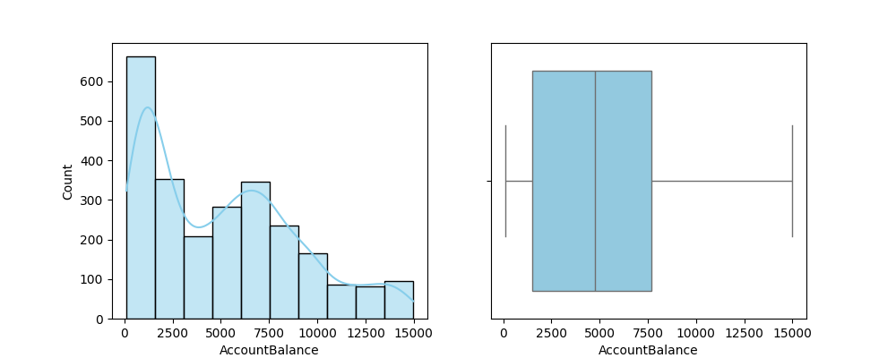
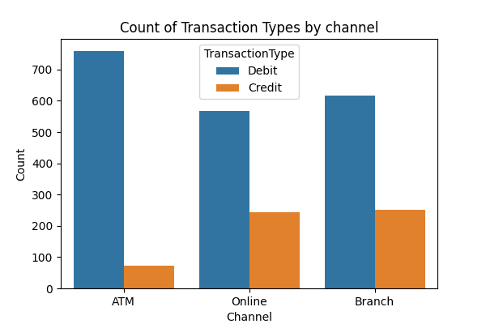
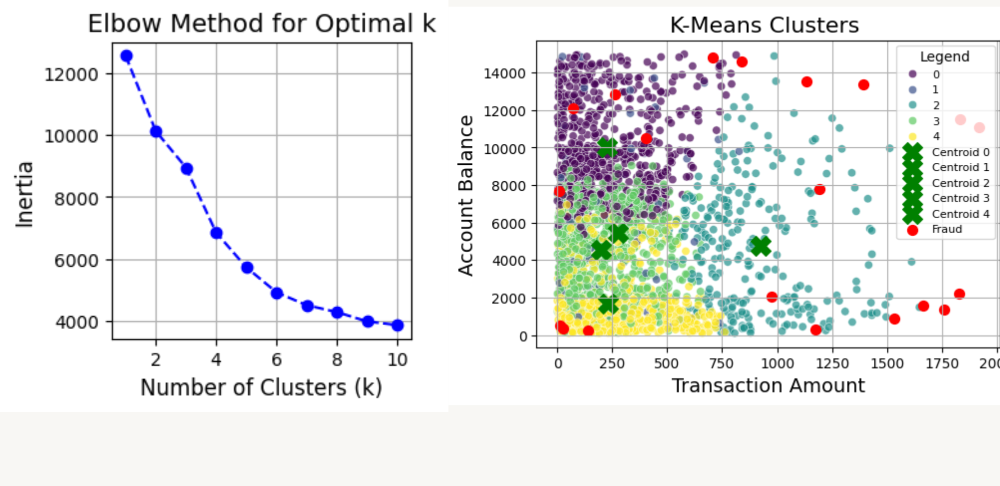
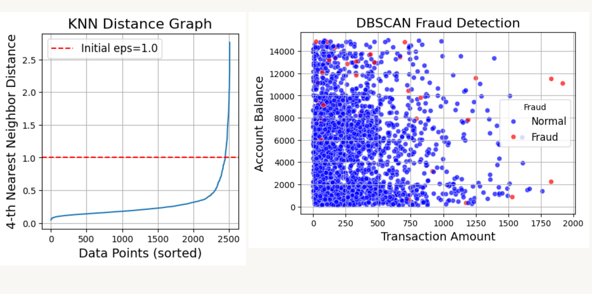
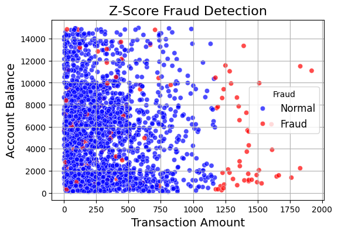
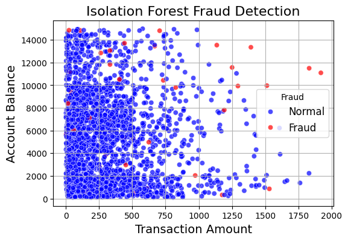
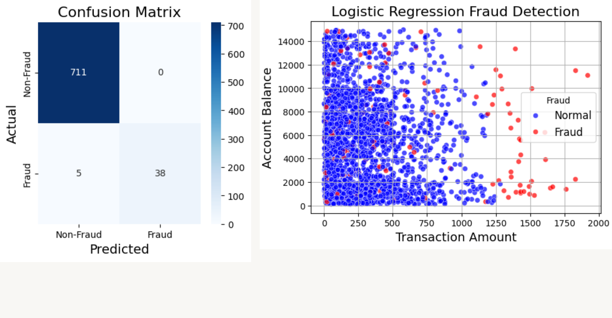

Fraud Detection using Machine Learning
The banking industry processes billions of transactions daily, making it a major target for fraudulent activities. Traditional fraud detection methods—rule-based systems, manual reviews by fraud analysts, or static thresholds with fixed limits—often fall short in identifying complex fraud schemes.
This is where Machine Learning comes into play. By analyzing transactional data, customer behavior, and account patterns, machine learning enables banks to detect fraud in real-time with remarkable accuracy.
In this blog post, we'll explore how machine learning models can analyze financial data, identify fraudulent transactions, and enhance the overall security of banking systems.
Objective of the project
The objective of this project is to detect fraudulent transactions in banking systems using Machine Learning techniques and advanced statistical methods. We aim to classify transactions as fraudulent or non-fraudulent with high accuracy by applying a series of techniques.
We start by using K-Means Clustering to identify irregularities by analyzing distances from cluster centroids. Then, DBSCAN is applied to flag suspicious transactions based on density. Next, Z-Score Analysis helps detect extreme statistical outliers, followed by Isolation Forest to pinpoint transactions that deviate significantly from normal patterns. Finally, Logistic Regression is used as a supervised learning model to classify transactions based on historical data.
By combining these methods, we aim to develop a robust and effective fraud detection solution. The results from all models will be integrated to create a clear and accurate list of fraudulent transactions, ensuring that no suspicious activity is overlooked and providing a reliable solution.
Project Workflow
This section will cover all the steps taken to execute the project.
Step 1: Dataset Overview
This dataset contains 2,512 transaction records, which can be used to detect fraud and identify unusual patterns. It includes details about the transactions, such as the Amount, Type, and Date, as well as information about the Customer, like Age and Occupation. Other features, like Account balance, Device ID, Location, and IP address, help in identifying fraudulent activity.
Step 2: Data Preprocessing
After loading the data, the first step is to clean it. This includes handling missing values by filling or removing them, depending on the situation. Next, I ensured that each feature had the correct data type (e.g., converting Transaction date and previous transaction to datetime datatype). To understand the data deeply i generated information of data and summary statistics which helped me identify outliers, potential errors, and patterns that might influence model performance.
Next before working on models it's important to standardize the data on the same scale, for that I applied standardization to the numerical features to ensure that all the features are on the same scale. This step ensures that features with larger scales do not dominate the learning process, leading to more balanced and effective model performance.
For categorical variables in data like Transaction type, location, Transaction Channel, and customer occupation, One-hot encoding is used to convert them into numerical format to make them understandable to Machine learning algorithms. It creates separate binary columns for each category in a feature, which allows the model to handle categorical variables without suggesting any specific order or value to the categories.
Step 3: Exploratory Data Analysis (EDA)
Before diving into machine learning models, I conducted Exploratory Data Analysis (EDA) to understand the distribution of data and visualize key patterns. Below are some key steps I took:
1. Univariate Analysis
I started by examining the distribution of individual features. For example, I plotted a histogram and a boxplot for Account balance to visualize its distribution and spot any outliers by using Boxplot.

The histogram shows a right-skewed distribution, with most account balances between 2,500 and 10,000. The boxplot confirms this range and shows no significant outliers.
Summary of Additional findings from Univariate Analysis:
Transaction Amount: The histogram shows a right-skewed distribution, with most transactions below 500. The boxplot confirms this, highlighting several outliers above 1,000, indicating occasional high-value transactions.
Customer Age: The histogram reveals a near-uniform distribution, with most customers aged between 30 and 70. The boxplot supports this, showing no significant outliers in the age range.
Transaction Duration: The histogram displays a right-skewed distribution, with most transactions completed within 50 to 200 seconds. The boxplot aligns with this observation and shows no outliers.
Login Attempts: The histogram indicates most users attempt to log in only once, with decreasing frequency for higher attempts, while the boxplot highlights a few rare cases of multiple login attempts.
2. Bivariate Analysis
In the Bivariate Analysis, I explored the relationships between pairs of variables. For instance, the bar graph below shows how the transaction types (Debit and Credit) vary across different channels (ATM, Online, and Branch).

The plot shows that Debit transactions are far more common than Credit transactions across all channels (ATM, Online, and Branch). Credit transactions are most frequent at branches, followed by online and then ATMs.
Summary of Additional findings from Bivariate Analysis:
- The Heatmap shows a moderate positive correlation between Account balance and Customer age (r = 0.32). This suggests that older customers tend to have higher account balances.
- Both debit and credit transactions have outliers, representing transactions with unusually high or low amounts compared to the majority.
- For transaction amounts by channel, Online transactions have the highest median at $350, followed by Branch at $300 and ATM at $250. ATM transactions are more consistent, while Online transactions show more variation in spending.
Step 4: Applying Machine Learning Models
Once the data was cleaned and analyzed, the next step was to use machine learning to spot fraudulent transactions. The goal was to classify each transaction as either fraudulent or Non fradulent, using a mix of both supervised and unsupervised learning methods.
In this section, I'll walk you through the machine learning models I used, how I applied them, and what results they produced.
1. K-Means Clustering Model
K-Means is an unsupervised learning algorithm that groups data into clusters based on their similarities. In this project, it was used to identify patterns in transactions and detect anomalies that could indicate fraud. Fraudulent transactions are expected to fall into smaller, distinct clusters, different from the majority of normal transactions.
For this project, I applied K-Means Clustering to the transaction data after preprocessing it using Scikit-learn's StandardScaler, which included standardizing (mean of 0 and standard deviation of 1) numerical features ensuring that features with larger ranges, like account balances, don't dominate the clustering process over smaller-scale features, like transaction durations, and One-hot encoding for categorical variables. Then, I chose the optimal number of clusters (k) using the Elbow Method, which helps find the optimal number of clusters in K-Means clustering by plotting the within-cluster sum of squares (WSS) against different values of k. As the number of clusters increases, WSS decreases, but at a certain point, the decrease slows down, forming an "elbow" in the graph. The k value at this elbow is considered optimal. In our case, the elbow was observed at k = 5, indicating that five clusters are ideal for our dataset.
from sklearn.cluster import KMeans
# Perform K-Means clustering
kmeans = KMeans(n_init='auto')
kmeans.fit(numeric_scaled)
n_clusters = 5
kmeans = KMeans(n_clusters=n_clusters, random_state=42)
kmeans_labels = kmeans.fit_predict(numeric_scaled)
df['KMeans_Cluster'] = kmeans_labels
# Calculate distances from centroids
centroids = kmeans.cluster_centers_
distances = np.linalg.norm(numeric_scaled.values - centroids[kmeans_labels], axis=1)
df['KMeans_Distance'] = distances
# Set threshold: Mean + 3 * Standard Deviation
threshold = distances.mean() + 3 * distances.std()
df['KMeans_Fraud'] = distances > threshold

Result:
The scatter plot generated for K-Means Clustering clearly illustrates the 5 clusters, each represented by different colors. The green crosses denote the centroids of these clusters, while transactions with larger distances from the centroids are highlighted as outliers (depicted as red dots). These red dots represent unusual transactions that deviate significantly from normal patterns, which are potential fraudulent activities.
Total Fraudulent Transactions Detected (Using K-Means Clustering): 20
2. DBSCAN Model
Density-Based Spatial Clustering of Applications with Noise (DBSCAN) is an unsupervised learning algorithm that identifies clusters based on the density of data points. It groups together points that are closely packed while marking points in low-density regions as outliers. Unlike K-Means, it does not require specifying the number of clusters beforehand. This flexibility makes DBSCAN especially effective in identifying noise (outliers) in datasets. For this project, DBSCAN was applied to detect fraudulent transactions by flagging points that deviated significantly from dense clusters of normal activity.
from sklearn.cluster import DBSCAN
# Apply DBSCAN
dbscan = DBSCAN(eps=1.2, min_samples=5)
dbscan_labels = dbscan.fit_predict(X_scaled)
df['DBSCAN_Cluster'] = dbscan_labels
# Flag fraud points (noise points are labeled -1)
df['DBSCAN_Fraud'] = df['DBSCAN_Cluster'] == -1
# Extract fraudulent transactions
dbscan_fraud_points = df[df['DBSCAN_Fraud']]
DBSCAN uses two main parameters: epsilon (the maximum distance between two points to be considered neighbors) and min samples (the minimum number of points required to form a dense region).
I used a K-Nearest Neighbors (KNN) graph to find the best value for ε. The graph showed an "elbow point" at 1.2, which is the ideal distance for clustering dense regions of transactions. After selecting e=1.2 and setting min samples=5, I applied the DBSCAN algorithm. This approach efficiently clusters transactions and marks those in low-density areas as outliers. After selecting e=1.2 and setting min samples=5, I applied the DBSCAN algorithm. This approach efficiently clusters transactions and marks those in low-density areas as outliers.

Result:
The scatter plot generated using DBSCAN highlights distinct clusters of transactions, and Outliers (or noise points) are flagged as red dots in the plot. These outliers represent transactions that deviate significantly from dense clusters, indicating potential fraud. DBSCAN identified 40 suspicious transactions, including many in less dense areas of the data that other models might miss. This shows how DBSCAN is useful for finding outliers based on data density instead of just distance.
3. Z-Score Analysis
Z-Score Analysis is a statistical method used to identify outliers by measuring how far a data point deviates from the mean in terms of standard deviations. This method is particularly useful for detecting anomalies in continuous variables. For this project Z-Score Analysis is used to identify transactions that deviate significantly from normal behavior. This method is especially effective for detecting extreme outliers in numerical data.
Mathematically:
Z = (X − μ) / σ
Where:
Xis the data point,μis the mean, andσis the standard deviation.
from scipy.stats import zscore
# Define numeric columns
numeric_cols = ['TransactionAmount', 'TransactionDuration', 'LoginAttempts', 'AccountBalance', 'CustomerAge']
# Calculate Z-Scores
z_scores = np.abs(zscore(df[numeric_cols]))
df['ZScore_Fraud'] = (z_scores > 3).any(axis=1)
# Extract fraudulent transactions
zscore_fraud_points = df[df['ZScore_Fraud']]
Transactions were flagged as suspicious if their Z-score exceeded 3, a common threshold for identifying outliers, and these were stored in a new column, Z-Score fraud to store suspicious transaction.
Features with a Z-score greater than ±3 were flagged as potential outliers and stored in a new column, Z-Score fraud to store suspicious transaction.

Result:
In its implication we scaled the feature first and then applied the test on it which gave the result of Total Fraudulent Transactions Detected by Z-Score Analysis: 140, these transactions were identified based on their significant deviation from average patterns shown as fraud points on scatter plot.
4. Isolation Forest Algorithm
Isolation Forest is an unsupervised anomaly detection algorithm designed specifically to identify rare and unusual data points. Unlike other algorithms that model normal data patterns, Isolation Forest focuses on isolating anomalies. It does this by creating random decision trees and measuring how quickly a point can be isolated. Transactions that differ significantly from others—like potential fraud—are isolated faster, making them easier to detect.
Isolation Forest works by randomly splitting the dataset into smaller subsets using decision trees. Anomalous points, which are fewer and behave differently from normal points, require fewer splits to isolate. Each transaction is assigned an anomaly score based on how many splits were needed to isolate it, with points requiring fewer splits receiving lower scores. Transactions with lower scores are flagged as anomalies, indicating potential fraud.
from sklearn.ensemble import IsolationForest
# Apply Isolation Forest
iso_forest = IsolationForest(contamination=0.02, random_state=42) # 2% expected anomalies
iso_forest.fit(numeric_scaled) # Fit on the scaled numeric data
# Predict anomalies
df['IsoForest_Score'] = iso_forest.decision_function(numeric_scaled)
df['IsoForest_Fraud'] = iso_forest.predict(numeric_scaled) == -1 # Mark anomalies (-1) as fraud
# Extract fraudulent transactions
iso_fraud_points = df[df['IsoForest_Fraud']]
The model was trained on scaled numerical data, including features such as Transaction Amount, Transaction Duration, and Account Balance.
The Isolation Forest model was initialized with a contamination parameter of 0.02 (indicating 2% anomalies) and fitted on the scaled numeric data. The model then predicted anomalies (labeled as -1) and flagged them as fraudulent transactions.

Results:
Using Isolation Forest, a total of 51 fraudulent transactions were detected. The algorithm flagged these transactions as anomalies based on their deviation from normal patterns, with visualizations showing these fraud points marked in red on the scatter plot. The flagged transactions were primarily characterized by unusual combinations of transaction amount and account balance. This method effectively identified potential fraudulent activities, including those that other models might have missed, highlighting its usefulness in detecting rare, outlier events in the data.
5. Logistic Regression
Logistic Regression is a statistical algorithm used to predict a binary outcome (like fraud vs. non-fraud) based on input features. It estimates the probability that a transaction belongs to a specific category (fraud or not) by fitting the data to a logistic function.
In this analysis, Logistic Regression was applied using features such as transaction amount, account balance, and customer age. The data was standardized for consistency and split into training (70%) and testing (30%) sets. The model was then trained to classify transactions as fraudulent or non-fraudulent.
# Split the dataset into training and testing sets
X_train, X_test, y_train, y_test = train_test_split(X_scaled, y, test_size=0.3, random_state=42)
# Train Logistic Regression model
log_reg = LogisticRegression(random_state=42)
log_reg.fit(X_train, y_train)
# Predict fraud on the test set
y_pred = log_reg.predict(X_test)
# Evaluate model performance
print("Classification Report:")
print(classification_report(y_test, y_pred))
# Confusion Matrix
conf_matrix = confusion_matrix(y_test, y_pred)
plt.figure(figsize=(6, 4))
sns.heatmap(conf_matrix, annot=True, fmt="d", cmap="Blues",
xticklabels=['Non-Fraud', 'Fraud'], yticklabels=['Non-Fraud', 'Fraud'])
plt.title('Confusion Matrix', fontsize=16)
plt.xlabel('Predicted', fontsize=14)
plt.ylabel('Actual', fontsize=14)
plt.show()
# Add predictions to the dataset
df['LogReg_Fraud'] = log_reg.predict(X_scaled)
df['Fraud'] |= df['LogReg_Fraud']

Result:
The confusion matrix evaluates the model's predictions:
- 711 transactions were correctly identified as non-fraud (True Negatives).
- 38 transactions were correctly identified as fraud (True Positives).
- 5 transactions were fraud but mistakenly identified as non-fraud (False Negatives).
- 0 transactions were non-fraud but mistakenly identified as fraud (False Positives).
In our classification report, the model achieved 99% accuracy, with high precision and recall for fraud detection. This means it effectively flagged fraudulent transactions while minimizing errors. Total Fraudulent Transactions Detected by Logistic Regression: 140
Consolidated Fraud Analysis Result
After running my fraud detection models, I found 157 fraudulent transactions in the data. Fraudulent transactions stood out in certain areas, giving useful insights into suspicious activity. To refine the analysis, I identified all Boolean columns in the dataset and used them to calculate a Threat Level for each fraudulent transaction based on the count of True values, indicating suspicious behaviors. I then sorted the transactions by their Threat Level in descending order, highlighting the most potentially fraudulent ones at the top. Finally, I displayed the top rows with the highest Threat Levels to quickly identify and prioritize the most concerning cases.
To understand the risk levels of transactions better, I created a heatmap for the top 20 transactions with the highest threat levels. The darker the shade on the heatmap, the higher the risk. This visualization makes it easy to focus on the most critical transactions for further investigation.
The account flagged most often was AC00358, detected 3 times, followed by accounts like AC00071, also flagged 3 times. I identified the top 10 accounts that were flagged multiple times, indicating they might be involved in repeated suspicious activity and need closer attention.
Conclusion
In this project, I explored the application of machine learning in detecting fraudulent transactions within banking systems. Through a series of supervised and unsupervised techniques, including Logistic Regression, K-Means Clustering, DBSCAN, Z-Score Analysis, and Isolation Forest, I was able to identify fraudulent activities with notable accuracy.
By combining multiple approaches, I was able to uncover valuable insights into transactional patterns, flag suspicious transactions, and pinpoint accounts with frequent fraudulent activities. The threat level system, based on Boolean values of suspicious behaviors, helped prioritize the most concerning transactions for further investigation, enabling faster and more accurate fraud detection.
Ultimately, this project demonstrates how machine learning and advanced statistical techniques can significantly enhance the security and efficiency of banking systems. The ability to detect fraud in real time, identify anomalies, and prioritize high-risk transactions has the potential to reduce financial losses, improve customer trust, and strengthen overall banking operations.
For the complete project, including the code and detailed analysis, visit my GitHub Repository.